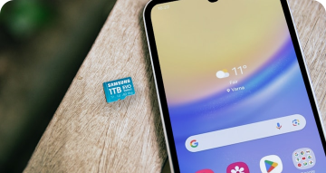
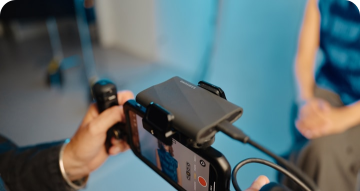
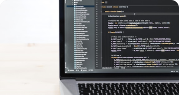

desenvolvimento
Desenvolvimento mobile
Por Fabio Tetsuo
Esse conteúdo foi criado pelo Fabio Tetsuo, mas eu tive o prazer de colaborar diretamente no desenvolvimento. Mobile é sobre criar soluções que facilitam a vida das pessoas — e fazer isso em equipe deixa tudo ainda mais poderoso. 🚀📱
22 Agosto 2022

saúde
Balancear vida profissional e pessoal
Por Ridho Satriawan
Tive a oportunidade de contribuir no desenvolvimento. Falar sobre equilíbrio é fácil, mas viver isso é desafio de todo dev — e justamente por isso, colaborar nesse conteúdo foi tão valioso. Porque no fim, produtividade também é saber a hora de pausar. 😉
22 Agosto 2022

desenvolvimento
Configurando VSCode
Por Fabio Tetsuo
Configurar o VSCode pode parecer simples, mas quando bem feito, ele vira quase uma extensão do nosso cérebro. 😄 Cada ajuste, atalho e extensão escolhida faz diferença no fluxo — e foi muito legal ajudar a montar esse setup redondo!
22 Agosto 2022
produtividade
2 monitores ou 1 ultrawide?
Por Fulano da Silva
A dúvida é clássica: vale mais dois monitores ou um ultrawide? Cada setup tem seu charme — o importante é encontrar o que encaixa melhor no seu fluxo. E como dev, posso garantir: uma boa tela faz toda a diferença na produtividade. 👨💻🖥️
22 Agosto 2022